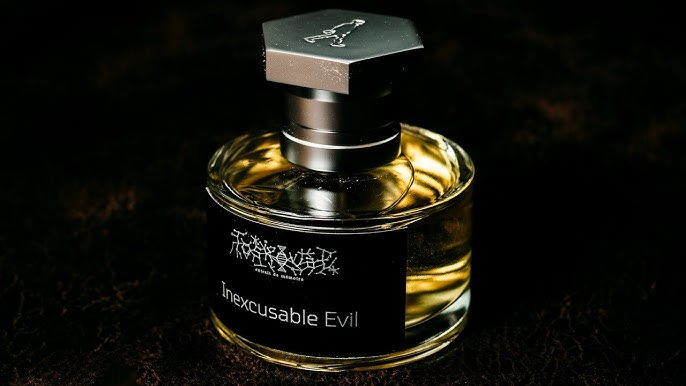
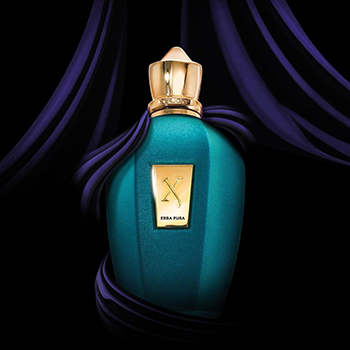

Niche Parfümök
- A niche parfüm olyan illat, amelyet kisebb, független parfümházak
készítenek, és jellemzően egyedi, különleges összetevőkből állnak.
- Ezek a parfümök már a drága kategóriába tartoznak.
- Ilyen márkák pl.: Xerjoff, Toskovat, Creed.
- Áruk megközelíti ha nem átlépi a 100 ezer forintot.
Toskovat: inexusable evil
- Toskovat ez egy "ultra niche" illat eseményekre akar emlékeztetni minket.
- Ez egy nagyon megosztó parfüm.
- Ez a parfüm a rombolásra akar emlékeztetni.
Illatjegyek:
- Fej jegyek: Puskapor, Ózon
- Szív jegyek: Vér, Kötések, Jód, Égő virágok, Guajakfa, Copaiba olaj, Nagarmotha
- Alap jegyek: Széttört beton, Eső, Tömjén, Szantálfa

Xerjoff Erba Pura
- Nagyon híres niche nyári illat.
- Tökéletes használat bármilyen eseményre.
- Ez egy Friss, gyümölcsös édes illat.
Illatjegyek:
- Fej jegyek: narancs, szicíliai citrom, kalabriai bergamott
- Szív jegy: gyümölcs
- Alap jegyek: fehér pézsma, borostyán, madagaszkári vanília
